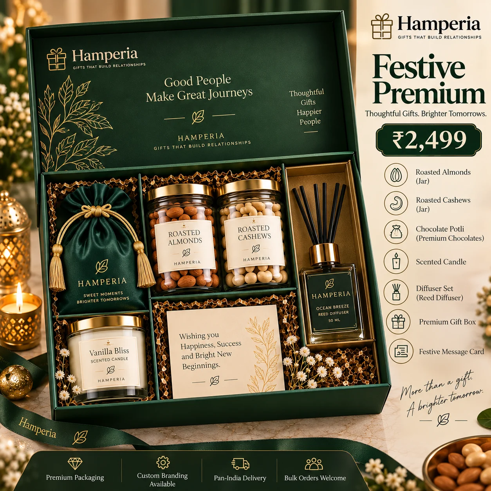

Make a hamper · 7 min read
How to make a gift hamper at home: a thoughtful step-by-step guide
Choose a theme, plan the contents, build a stable arrangement and finish it with a personal message.
Read the guide ↗Home / Gift hamper ideas & corporate gifting guides.
Explore Diwali gifting ideas, corporate gift planning and practical advice for making a personalised hamper. Choose a guide for your occasion, then browse Hamperia’s gift collections.
Start here · 7 min read
Choose a theme, plan the contents, build a stable arrangement and finish it with a personal message.
Read the step-by-step guideThe Hamperia journal
10 practical guides · Updated as our gift ideas grow

Corporate gifting · 7 min read
Compare corporate gift ideas and prepare a clear brief for quantity, budget, branding and delivery.
Read the guide ↗
Corporate gifting · 7 min read
Compare festive hamper options, prepare your recipient list and confirm customisation and delivery before the season gets busy.
Read the guide ↗Corporate gifting · 6 min read
Use a clear brief and a simple approval checklist to compare quantities, branding, packaging and delivery plans.
Read the guide ↗Corporate gifting · 7 min read
Plan branded bottles, tumblers, mugs, apparel and keepsakes with the right artwork, quantity and approval process.
Read the guide ↗
Gift hamper guide · 6 min read
Compare jar counts, check food details and choose packaging that suits a personal or corporate gift.
Read the guide ↗Gift hamper guide · 6 min read
A simple guide to matching the recipient, occasion, contents and message without making the gift feel generic.
Read the guide ↗Need help with a gift?
Share the occasion, number of gifts, budget and delivery date. We’ll help you prepare a clear hamper or corporate gifting enquiry.